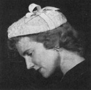
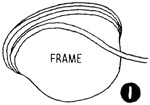
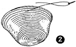
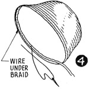
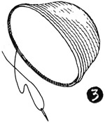

1952—How to Make Hats
by Ruby Carnahan
Making a Straw Braid Hat in One Piece Using a Buckram Frame for a Block
MATERIAL REQUIRED
- Hat frame.
- 8 to 10 yards of 1" straw braid.
BASTING STRAW BRAID TO FRAME
WRAP STRAW BRAID IN A DAMP TOWEL FOR SEVERAL HOURS BEFORE USING.
(Illus. 1) Starting in back, baste braid on top side of frame on brim edge, lapping each row of braid slightly, pulling braid just a little as you baste. Continue in this manner until top of crown is reached. Last row will have an elongated shape instead of round. Slip end of braid on top under last row, cut off braid and baste flat.
STEAMING AND SEWING BRAID
Pass braid side of frame through steam from a teakettle several times (do not hold frame still in steam at any time) Keep it moving as too much steam in one spot will cause frame to collapse. (Illus. 2) Sew each row together while on frame, using small stitches concealed in straw being careful not to sew through to buckram frame. When braid is thoroughly dry, clip basting and remove basting threads except around brim edge of frame. Apply a coat of straw sizing to straw and allow to dry thoroughly on frame. When thoroughly dry clip basting on brim edge and remove from frame.
WIRING BRIM EDGE OF HAT
Measure a piece of wire to fit brim edge and join wire with a wire joiner. Pin wire on under side of straw brim and whip stitch wire to braid (Illus. 3). Fit a row of straw braid over wire on under side, starting braid in back, turn ends of braid under and sew around brim edge (Illus. 4). Steam this row of braid slightly, let dry and apply a coat of straw sizing to entire under side of brim and allow to dry thoroughly.
HEADSIZE FINISH
Finish around headsize with a swirled headband ribbon.
Instructions for swirled headband ribbon page 45.